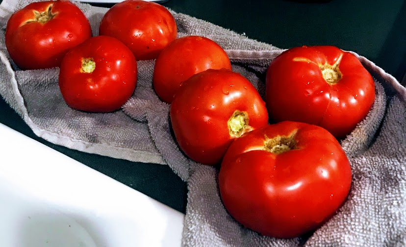

Briana's Famous Eggplant Parm (not pictured)

Description
I don't even follow a "true" recipe when I make eggplant parmesan anymore. It's so dang easy and I've done it so many times that I can pretty much just guess/eyeball my way through it nowadays. And really, how can one go wrong with mozzarella cheese and breaded eggplant?
Ingredients
For the sauce:
- Tomatoes
- Tomato paste
- LOTS of oli oil (olive oil)
- Gahlic
- Basil
- Salt
- Pepper
- Onion
For the eggplant and the parmesan:
- Eggplant
- Breadcrumbs
- Eggs
- Mozzarella cheese
Steps
- Bread the eggplant
- Fry the eggplant
- Make the sauce
- Layer eggplant, sauce, and mozzarella in a baking dish
- Bake that shit